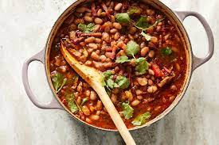

Drunken Baked Beans
(Frijoles Borrachos)

Description
My version of frijoles borrachos, or drunken baked beans, might just be my all-time favorite version of baked beans.
Say beer makes everything better, which might not be literally true, but once you taste a spoonful of these super savory, sweet and tangy, slightly spicy, and thoroughly amazing baked beans, you will surely agree.
Ingredients
- 1/2 cup lightly packed light brown sugar
- 1/3 cup apple cider vinegar
- 1 cup prepared red salsa
- 3 cups pinto beans, drained, not rinsed
- 1 cup diced onion
- 1/2 cup chopped jalapeno peppers
- 2 tablespoons prepared mustard
- 1 tablespoon smoked paprika
- 1 teaspoon freshly ground black pepper
- 2 teaspoons kosher salt
- 1 teaspoon garlic powder
- 1/2 teaspoon Mexican oregano
- 1/4 teaspoon cayenne pepper
- 1 (12-ounce) bottle Mexican lager-style beer (such as Modelo®)
- 3 strips bacon (optional)
Steps
- Preheat the oven to 400 degrees F (200 degrees C).
- Add brown sugar, vinegar, and salsa to a 2 1/2- to 3-quart baking dish or casserole pan. Stir until sugar dissolves.
- Add pinto beans, onion, jalapeno peppers, mustard, paprika, black pepper, salt, garlic powder, oregano, and cayenne pepper. Pour lager over, and stir until thoroughly combined.
- Lay bacon strips on top of casserole.
- Bake in the preheated oven until liquids have reduced and thickened, 1 to 1 1/2 hours.